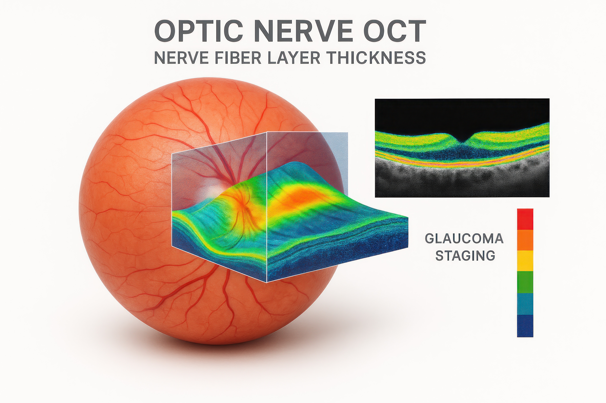

Routine Vision Tests
Comprehensive eye examinations to check visual clarity, overall eye health, and prescription needs.
Vcare Opticals offers a wide range of eye-care services designed to support clear vision, comfort, and long-term eye health.
Comprehensive eye examinations to check visual clarity, overall eye health, and prescription needs.

Review and update your glasses or contact lens prescription to keep your vision clear and comfortable.

Professional fitting and advice to help you choose contact lenses that suit your lifestyle and comfort.

Assessment and guidance for managing dry-eye symptoms and improving daily comfort.

Advanced screening for conditions such as glaucoma, cataracts, and macular degeneration using modern diagnostic technology.
Stylish frames, sunglasses, and specialty lenses to suit both functional and fashionable needs.
We support children and families with routine checkups, prescription changes, and practical advice for healthy visual development and comfortable learning.
Adults who spend long hours on screens may experience eye strain, dry-eye symptoms, or changing visual needs. We provide advice and treatment options suited to daily work routines.
Elderly patients may benefit from regular screening and monitoring for age-related eye-health changes. Our team explains results clearly and provides ongoing support.
Contact our team to discuss your vision concerns, book an eye exam, or ask about lenses, frames, and screening options.